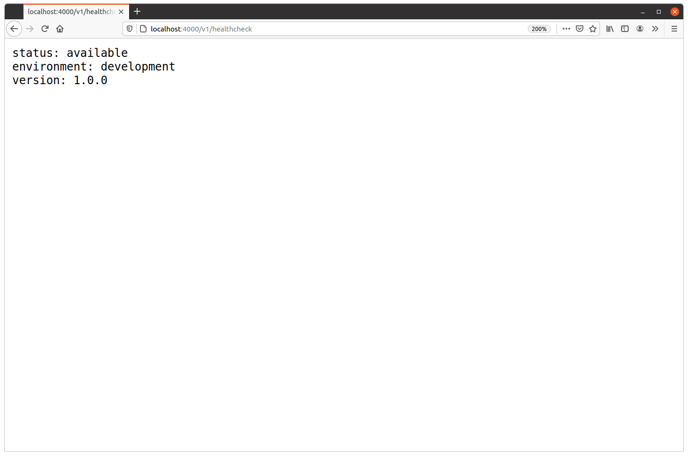

یک سرور HTTP پایه
حالا که ساختار اسکلت پروژه آماده است، تمرکزمان را روی راهاندازی و اجرای یک سرور HTTP میگذاریم.
برای شروع، سرورمان را طوری پیکربندی میکنیم که فقط یک endpoint داشته باشد: /v1/healthcheck. این endpoint چند اطلاعات پایه درباره API ما برمیگرداند، از جمله شماره نسخه فعلی و محیط اجرایی آن، مثل development، staging، production و غیره.
| عملیات | Handler | الگوی URL |
|---|---|---|
| نمایش اطلاعات برنامه | healthcheckHandler | /v1/healthcheck |
اگر همراه کتاب پیش میروید، فایل cmd/api/main.go را باز کنید و برنامه «hello world» را با کد زیر جایگزین کنید:
package main import ( "flag" "fmt" "log/slog" "net/http" "os" "time" ) // Declare a string containing the application version number. Later in the book we'll // generate this automatically at build time, but for now we'll just store the version // number as a hard-coded global constant. const version = "1.0.0" // Define a config struct to hold all the configuration settings for our application. // For now, the only configuration settings will be the network port that we want the // server to listen on, and the name of the current operating environment for the // application (development, staging, production, etc.). We will read in these // configuration settings from command-line flags when the application starts. type config struct { port int env string } // Define an application struct to hold the dependencies for our HTTP handlers, helpers, // and middleware. At the moment this only contains a copy of the config struct and a // logger, but it will grow to include a lot more as our build progresses. type application struct { config config logger *slog.Logger } func main() { // Declare an instance of the config struct. var cfg config // Read the value of the port and env command-line flags into the config struct. We // default to using the port number 4000 and the environment "development" if no // corresponding flags are provided. flag.IntVar(&cfg.port, "port", 4000, "API server port") flag.StringVar(&cfg.env, "env", "development", "Environment (development|staging|production)") flag.Parse() // Initialize a new structured logger which writes log entries to the standard out // stream. logger := slog.New(slog.NewTextHandler(os.Stdout, nil)) // Declare an instance of the application struct, containing the config struct and // the logger. app := &application{ config: cfg, logger: logger, } // Declare a new servemux and add a /v1/healthcheck route which dispatches requests // to the healthcheckHandler method (which we will create in a moment). mux := http.NewServeMux() mux.HandleFunc("/v1/healthcheck", app.healthcheckHandler) // Declare an HTTP server which listens on the port provided in the config struct, // uses the servemux we created above as the handler, has some sensible timeout // settings, and writes any log messages to the structured logger at Error level. srv := &http.Server{ Addr: fmt.Sprintf(":%d", cfg.port), Handler: mux, IdleTimeout: time.Minute, ReadTimeout: 5 * time.Second, WriteTimeout: 10 * time.Second, ErrorLog: slog.NewLogLogger(logger.Handler(), slog.LevelError), } // Start the HTTP server. logger.Info("starting server", "addr", srv.Addr, "env", cfg.env) err := srv.ListenAndServe() logger.Error(err.Error()) os.Exit(1) }
ایجاد healthcheck handler
کار بعدی این است که متد healthcheckHandler را برای پاسخ دادن به درخواستهای HTTP ایجاد کنیم. فعلا منطق این handler را خیلی ساده نگه میداریم و کاری میکنیم یک پاسخ plain-text شامل سه تکه اطلاعات برگرداند:
- یک رشته ثابت
"status: available". - نسخه API از ثابت hard-coded به نام
version. - نام محیط اجرایی از flag خط فرمان
env.
یک فایل جدید به نام cmd/api/healthcheck.go ایجاد کنید:
$ touch cmd/api/healthcheck.go
و سپس کد زیر را به آن اضافه کنید:
package main import ( "fmt" "net/http" ) // Declare a handler which writes a plain-text response with information about the // application status, operating environment and version. func (app *application) healthcheckHandler(w http.ResponseWriter, r *http.Request) { fmt.Fprintln(w, "status: available") fmt.Fprintf(w, "environment: %s\n", app.config.env) fmt.Fprintf(w, "version: %s\n", version) }
نکته مهمی که باید اینجا به آن اشاره کنیم این است که healthcheckHandler به عنوان یک method روی struct مربوط به application پیادهسازی شده است.
این یک روش موثر و idiomatic برای در دسترس قرار دادن وابستگیها برای handlerهای ماست، بدون اینکه سراغ متغیرهای global یا closureها برویم. هر وابستگیای که healthcheckHandler لازم داشته باشد، میتواند هنگام initialize کردن application در main() به سادگی به عنوان یک field در آن struct قرار بگیرد.
میتوانیم همین الگو را در کد بالا ببینیم؛ جایی که نام محیط اجرایی با فراخوانی app.config.env از struct مربوط به application خوانده میشود.
نمایش عملی
خوب، بیایید آن را امتحان کنیم. مطمئن شوید همه تغییرات ذخیره شدهاند، سپس دوباره از دستور go run استفاده کنید تا کد پکیج cmd/api اجرا شود. باید یک پیام log ببینید که تایید میکند سرور HTTP در حال اجراست، شبیه این:
$ go run ./cmd/api time=2023-09-10T10:59:13.722+02:00 level=INFO msg="starting server" addr=:4000 env=development
در حالی که سرور در حال اجراست، آدرس localhost:4000/v1/healthcheck را در مرورگر وب خود باز کنید. باید پاسخی از healthcheckHandler دریافت کنید که شبیه این است:

در حالت جایگزین، میتوانید از curl برای ارسال درخواست از ترمینال استفاده کنید:
$ curl -i localhost:4000/v1/healthcheck HTTP/1.1 200 OK Date: Mon, 05 Apr 2021 17:46:14 GMT Content-Length: 58 Content-Type: text/plain; charset=utf-8 status: available environment: development version: 1.0.0
اگر خواستید، میتوانید با مشخص کردن مقدارهای جایگزین برای port و env هنگام اجرای برنامه، بررسی کنید که flagهای خط فرمان درست کار میکنند. وقتی این کار را انجام دهید، باید محتوای پیام log مطابق آن تغییر کند. برای مثال:
$ go run ./cmd/api -port=3030 -env=production time=2023-09-10T10:59:13.722+02:00 level=INFO msg="starting server" addr=:3030 env=production
اطلاعات تکمیلی
نسخهبندی API
APIهایی که از کسبوکارها و کاربران واقعی پشتیبانی میکنند، معمولا لازم است عملکرد و endpointهایشان را در طول زمان تغییر دهند؛ گاهی حتی به شکلی که با نسخههای قبلی ناسازگار باشد. بنابراین برای جلوگیری از مشکل و سردرگمی برای کلاینتها، بهتر است همیشه نوعی versioning برای API پیادهسازی کنید.
برای انجام این کار دو رویکرد رایج وجود دارد:
- با اضافه کردن نسخه API به ابتدای همه URLها، مثل
/v1/healthcheckیا/v2/healthcheck. - با استفاده از headerهای سفارشی
AcceptوContent-Typeدر درخواستها و پاسخها برای انتقال نسخه API، مثلAccept: application/vnd.greenlight-v1.
از دید معناشناسی HTTP، استفاده از headerها برای انتقال نسخه API رویکرد «خالصتر» است. اما از دید تجربه کاربری، استفاده از prefix در URL احتمالا بهتر است. این کار به توسعهدهندهها اجازه میدهد با یک نگاه ببینند کدام نسخه API در حال استفاده است و همچنین باعث میشود API همچنان با یک مرورگر وب معمولی قابل بررسی باشد، چیزی که در صورت نیاز به headerهای سفارشی سختتر میشود.
در سراسر این کتاب، API را با اضافه کردن /v1/ به ابتدای همه مسیرهای URL نسخهبندی میکنیم؛ درست مثل کاری که در این فصل با endpoint مربوط به /v1/healthcheck انجام دادیم.